75.39median expected age if alive at 65
211 country-years, 11 countries
01
The finding
This box is the article. The rest is evidence.
TL;DR
When life expectancy at birth was under 40, people already 65 still expected about 75.
0.27share of births that reached 65
195.9infant deaths per 1,000 births
75.07same age-at-65 figure when birth LE was 30 to 35
The myth
“Life expectancy was 30 to 35, so adults died at 30 to 35.”
What the tables say
Early deaths were mostly babies and children. People who reached old age were not timed to die at 35.
Sweden, 1800: life expectancy at birth 32.2. About 227 infant deaths per 1,000. About 21% of births reached 65. Those who did expected age about 73.7.
Second myth, also wrong: adults improved too. Remaining life at 65 rose about +8.45 years from before 1900 to after 2000 (12 countries; about 7.7 to 9.1).
Scope: countries with strong vital registration in open life tables (Human Mortality Database style). One year’s death rates, not every past society, not one person’s full life story.
02
Plain English
If 75 and 27% feel like they fight each other, start here.
Simple version
Picture 1,000 babies in a hard year. Hundreds die before age one. More die as small children. Average age at death for the whole group can sit in the thirties. That average is real. It is a bad summary of how long a grown-up lived.
The meme number
~32Life expectancy at birth: average years for a newborn if this year’s death rates never changed. Dead babies pull it down hard.
The forgotten number
~75If you already reached 65 under those rates, expected age at death is around the mid-seventies. Not 35.
The catch
~1 in 4Only about a quarter of births reached 65 when birth life expectancy was under 40. Most never got the old-age number.
Two questions, same year
Life expectancy at birth: for a baby born into this year’s death rates, how many years on average?
Age if already 65: you already survived; under this year’s rates, how old do people like you die?
Same rates. Different questions. The myth swaps them.
So did people die young?
Yes. Childhood killed a huge share of births. That is why the newborn average was low.
No. Adults were not on a 35-year clock. By 15, expected age is already the mid-fifties. By 65, about 75.
03
Two myths
Both fail for the same reason: one number, wrong question.
Myth A
“Life expectancy was 30 to 35, so people died at 30 to 35.” Confuses the newborn average with adult death age.
FALSEMyth B
“Only baby survival got better. Adults always lived modern lengths.” Remaining life at 65 still rose hard.
FALSEThe rule
Always pair survivor age with infant death or survival to 65. Never post 75 without the 27%. Never post 32 without asking who died early.
DO THIS04
Proof
One long series first. Then many countries. Then the exact meme window.
Sweden
What to look at
Longest clean series. As baby death falls, life expectancy at birth rises. The “already 65” line sits high the whole time, then rises further.
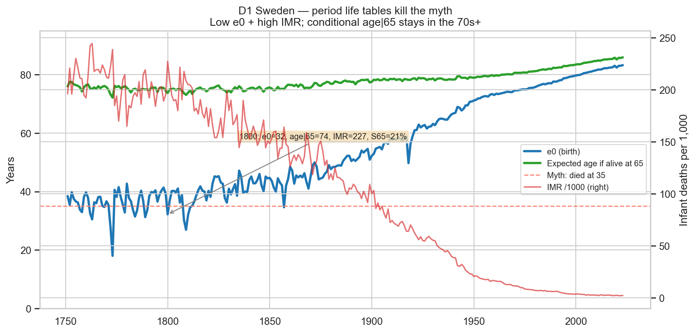
Eleven countries, same pattern
| When life expectancy at birth < 40 | Value |
|---|---|
| Country-years (both sexes, cleaned) | 211 |
| Countries | 11 |
| Median life expectancy at birth | 37.0 |
| Median infant deaths per 1,000 | 195.9 |
| Median share reaching 65 | 0.270 |
| Median expected age if alive at 65 | 75.39 |
| Median of country medians (one vote each) | 75.37 |
| Range of country medians | 74.78 to 76.08 |
Sweden has many years in the sample. One vote per country still lands near 75.
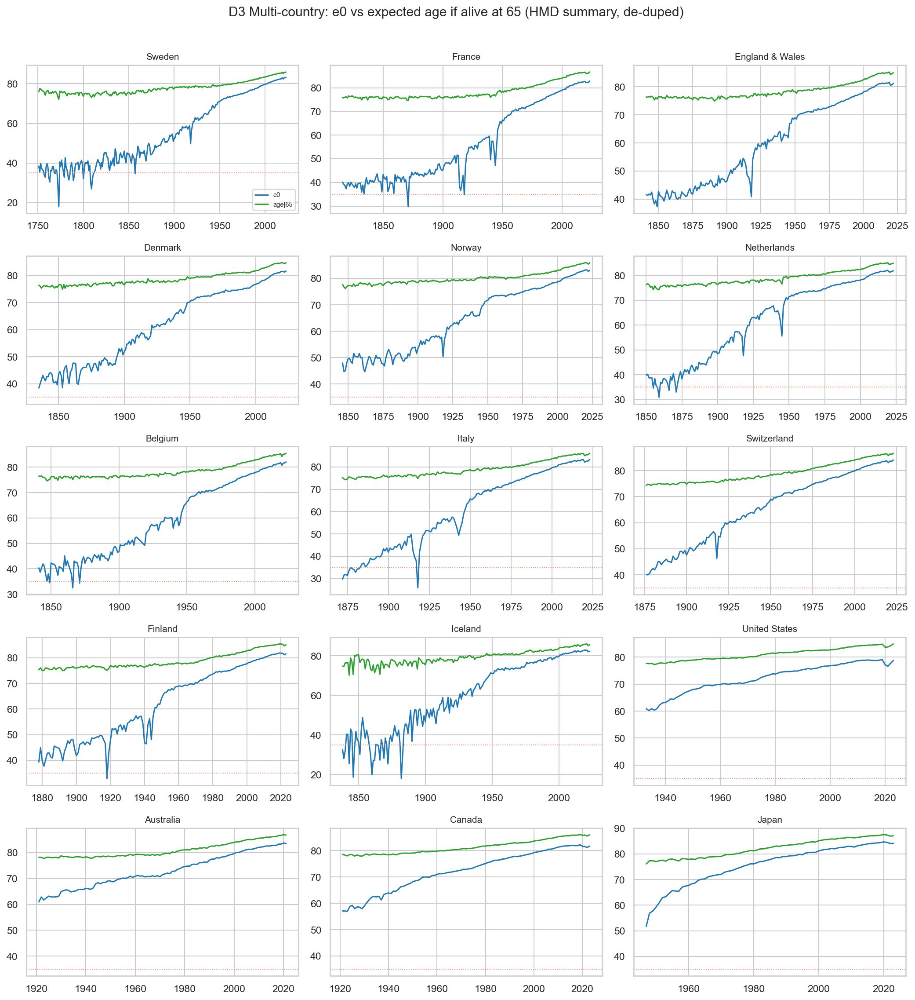
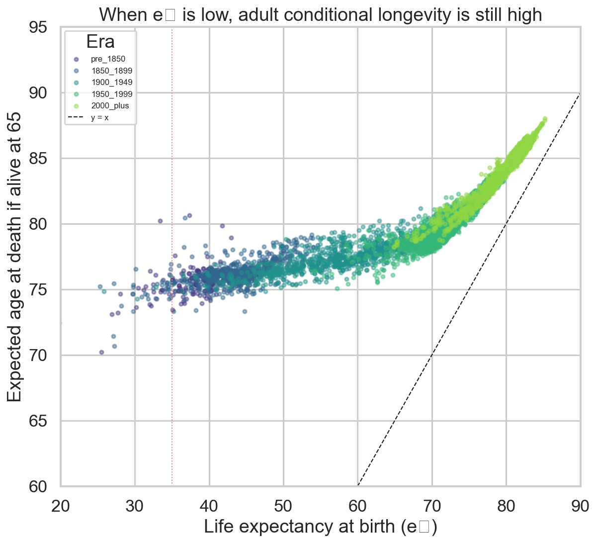
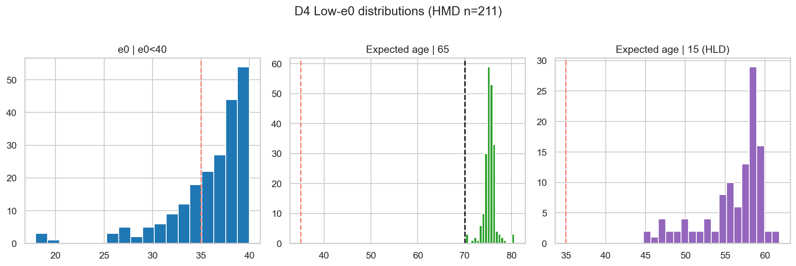
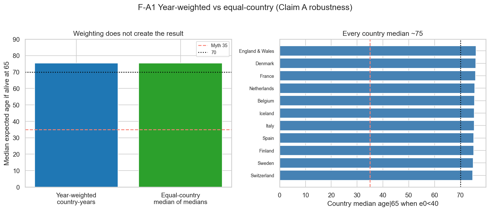
Deaths pile up early
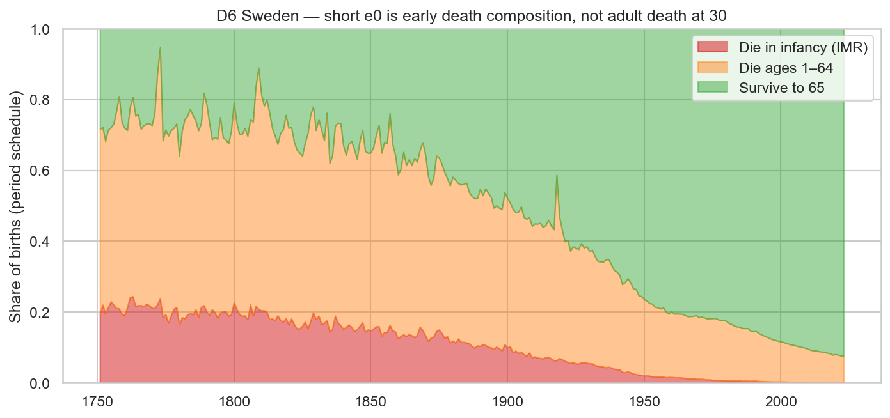
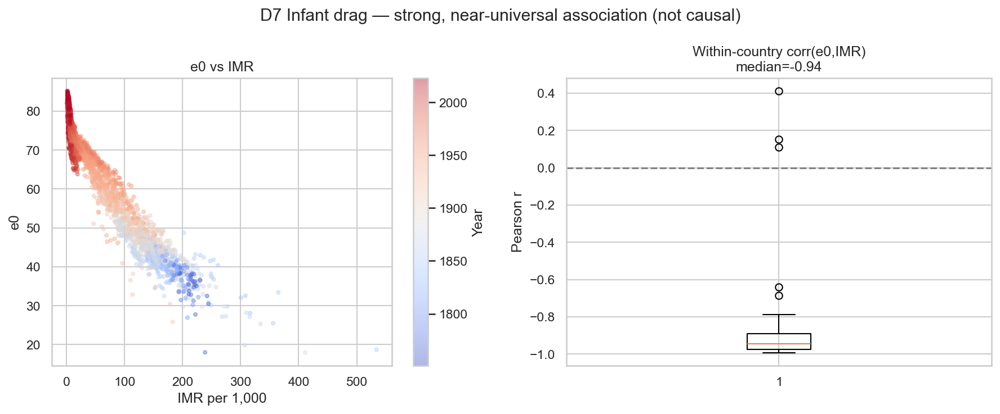
Narrow to the meme window: birth LE 30 to 35
Only years where life expectancy at birth was 30 to 35:
- 45 country-years, 8 countries
- Median birth LE about 33.5
- Median infant deaths per 1,000 about 213
- Median share reaching 65 about 0.22
- Median expected age if alive at 65 still about 75.07
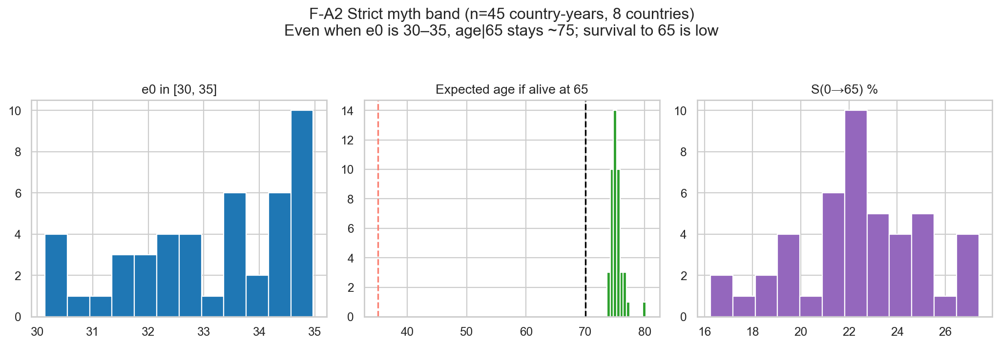
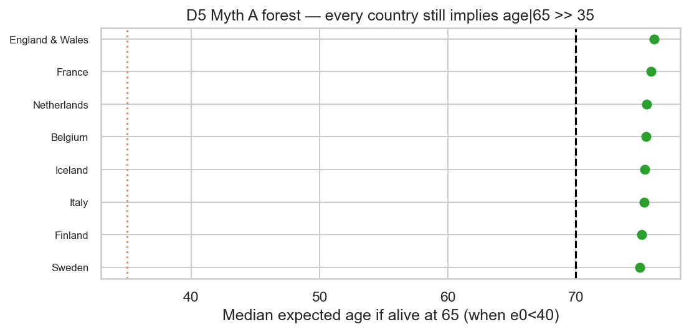
05
The myth fails long before 65
The myth already fails at 15. Each rung is expected age if you are already alive there.
Simple version
At birth the average is low because of baby death. If you are still alive at 15, expected age jumps into the fifties. At 30, about 60. At 65, about 75.
| Already this age | Expected age (single-table) | Expected age (median of tables) |
|---|---|---|
| 0 (birth) | ~35 | ~37 |
| 5 | ~52 | ~53 |
| 15 | ~56 | ~58 |
| 20 | ~57 | ~59 |
| 30 | ~60 | ~62 |
| 50 | ~68 | ~69 |
| 65 | ~75 | ~75 |
Source: Human Life-Table Database, years when birth LE was under 40. Single-table cells and multi-table medians both show the same climb.
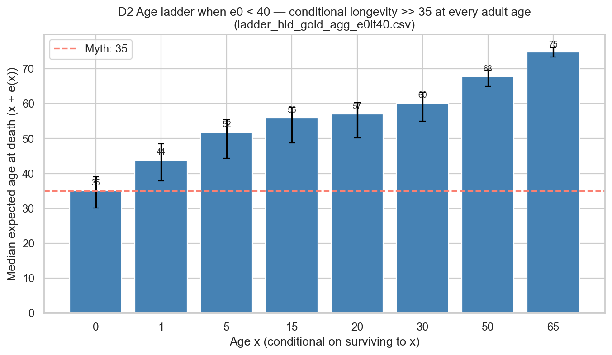
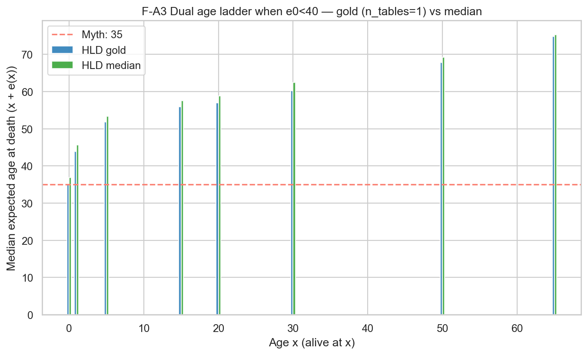
06
Adults improved too
Fixing Myth A does not mean adult longevity never moved.
| Remaining life at age 65 | Value |
|---|---|
| Mean change (after 2000 minus before 1900) | +8.45 years |
| 95% interval (bootstrap over countries) | 7.74 to 9.14 |
| Median country change | +8.44 |
| Range across countries | +6.4 to +10.7 |
| Countries | 12 |
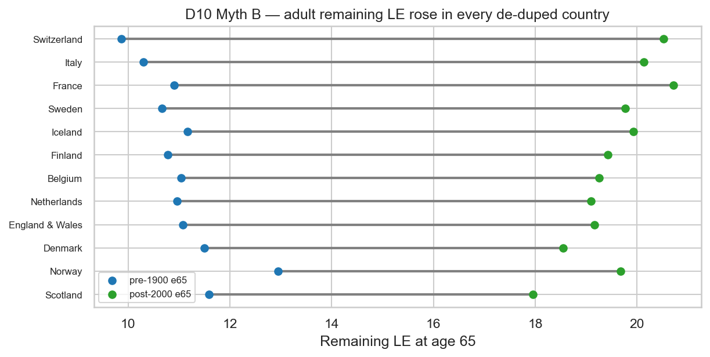
07
Data and checks
Headline numbers: Human Mortality Database public summaries (birth LE, LE at 65, infant mortality, survival to 65). Age ladder: Human Life-Table Database. Context: OWID, Clio, Eurostat.
| Piece | What we used |
|---|---|
| Main panel | 4,277 country-years, 44 regions, 1751 to 2023 |
| Myth A sample | Birth LE under 40: 211 country-years, 11 countries |
| Long series | Sweden from 1751; France from 1816; England and Wales from 1841; USA from 1933 |
| Cleanup | Drop double-counted population variants; do not let multi-table life tables flood the average |
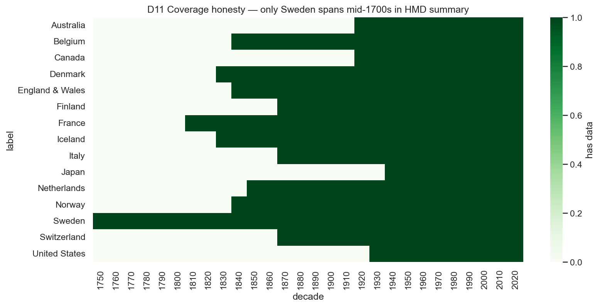
Birth LE and infant death move together
Simple regressions and within-country correlations show it. High R-squared is expected: both come from the same year’s death rates. Description, not a causal claim about one policy lever.
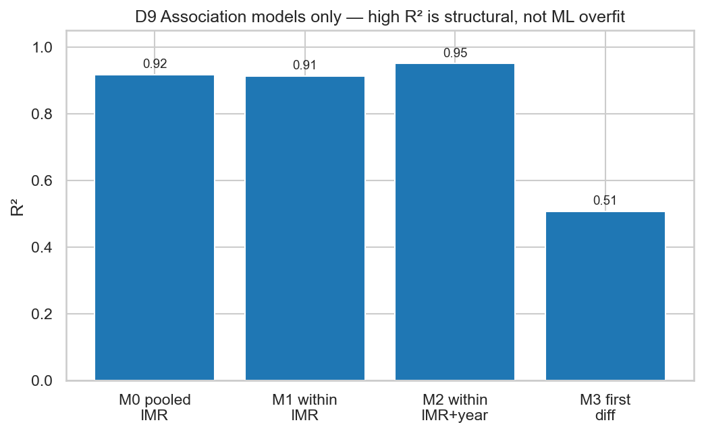
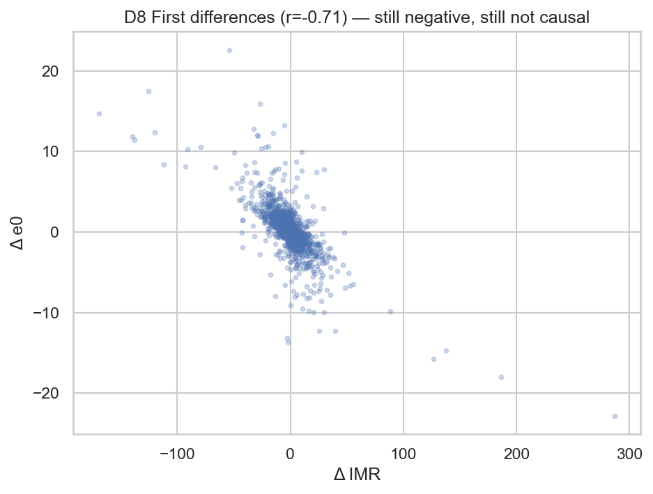
Men, women, worst year
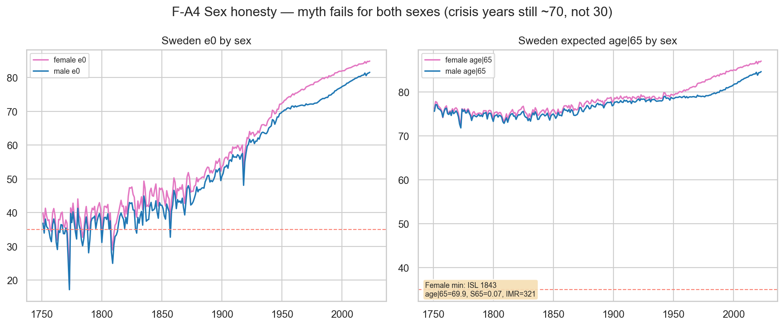
python -m src.analysis.run_final_agrade
python -m pytest -q
# outputs/bulletproof/final_claims.json
# outputs/reports/FINAL_A_GRADE_REPORT.mdBuilt with Grok 4.5 as a coding partner. Numbers are checked against open tables and repo claim gates.
08
Limits
- Strong vital-registration countries in open databases. Not every past society.
- Period rates for a year. Not one person’s full biography from birth to death.
- “Age if already 65” only applies to people who reached 65. Pair it with survival or infant death.
- Mid-age ladder tables vary by method. We show two builds on purpose.
- Iceland 1843 is a crisis floor near 70 for women, not proof of the 35 myth.
One line to share
Life expectancy of 30 meant childhood was deadly, not that adults died at 30. Survivors to 65 still expected about 75. Adults later gained about 8 more years at that age.
Post 75 with the 27%. Post 32 with the infant deaths. Keep both numbers together.